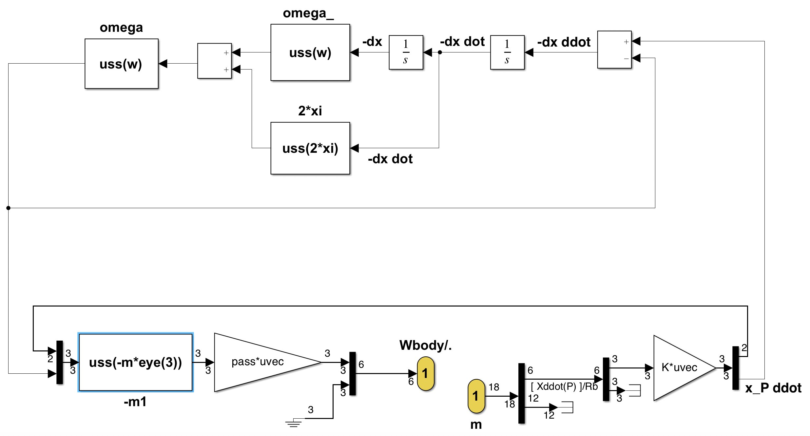

u_sloshing
Sloshing 1D mass-spring linear model (6x18)
It computes the $(6 \times 18)$ dynamics model of a spring-mass system $\mathcal A$ located at point $P$ (connection point with the parent body $\mathcal P$) along any direction, i.e. the transfer from the motion vector imposed by the parent body to the wrench applied by $\mathcal{A}$ to the parent body
- in the parent body frame $\mathcal{R}_p$,
- at the point $P$ : the connection point with the parent body
See also: General notations, Proof Mass Actuator (PMA)
Contents
Description
It consists in writing the equation of a $1D$ spring-mass system in a new frame, where the $3^{rd}$ axis is along the given spring-mass system direction $\mathbf{v}$.
The DCM from $\mathcal{R}_{b}$ to this new frame $\mathcal{R}_{i}$ is: $\mathbf{P}_{i/b}=\mathbf{P_v}\left[\begin{array}{ccc} \mbox{det}(\mathbf{P_{v}}) & 0 & 0\\ 0 & 1 & 0 \\ 0 & 0 & 1\end{array}\right]$ with: $\mathbf{P_v}=\left[\mbox{null}([\mathbf{\tilde{v}}]^T_{\mathcal{R}_b})\quad [\mathbf{\tilde{v}}]_{\mathcal{R}_b}\right]$ and $\mathbf{\tilde{v}}=\mathbf{v}/\|\mathbf{v}\|$.
Let us define:
- $\delta\mathbf m^{\mathcal P}_{P}$: the motion vector ($18\times 1$) of the parent body $\mathcal P$ at the point $P$. $\delta\mathbf m^\mathcal{P}_P=\left[{\boldsymbol{\mathbf{x}''}^\mathcal{P}_P}^T\;\;{\delta\boldsymbol{\mathbf x'}^\mathcal{P}_P}^T\;\;{\delta\mathbf{x}^\mathcal{P}_P}^T\right]^T$ with $\boldsymbol{\mathbf{x}''}^\mathcal{P}_P= \left[ {\mathbf{a}^{\mathcal P}_P}^T \;\; {\boldsymbol{\dot\omega}^{\mathcal P}}^T \right]^T$,
- $\mathbf{W}_{\mathcal{A/P},P}=\left[ \mathbf{F}_{\mathcal{A/P}}^T \;\; \mathbf{T}_{\mathcal{A/P},P}^T \right]^T$: the wrench applied by $\mathcal{A}$ to the parent body $\mathcal P$ at the point $P$,
- $k=m\omega^2$ and $f=2m\xi\omega$ the stiffness of the damping of the spring mass system characterized by its mass $m$, its cantilever frequenci $\omega$ and its damping ratio $\xi$,
- $\delta x$ the internal deflection of the spring-mass system.
In this new frame $\mathcal R_i$, the equations of motions are:
- $\left[ \mathbf{F}_{\mathcal{A/P}}\right]_{\mathcal R_i}(1:2)=-m\left[\mathbf{a}^{\mathcal P}_P \right]_{\mathcal R_i}(1:2)$
- $m\left(\ddot{\delta x}+\left[\mathbf{a}^{\mathcal P}_P \right]_{\mathcal R_i}(3)\right)=-k\delta x-f\dot{\delta x}$
- $\left[ \mathbf{F}_{\mathcal{A/P}}\right]_{\mathcal R_i}(3)=k\delta x+f\dot{\delta x}$
- $\left[ \mathbf{T}_{\mathcal{A/P},P}\right]_{\mathcal R_i}=\mathbf 0$
Ports
Input:
Output:
Parameters
- the direction vector ($3 \times 1$) $\mathbf{v}$ of the spring-mass system expressed in the $\mathcal{R}_b$.
- the sloshing mass $m$ attached to the spring (unit: $kg$)
- the frequency $\omega$ of the flexible mode (unit: $rad\, s^{-1}$)
- the damping ratio $\xi$ of the flexible mode
Each parameter can be an uncertain parameter declared with "ureal".
Simulink diagram under the mask

with: $\mathrm{pass}=\mathbf{P}_{i/b}$.